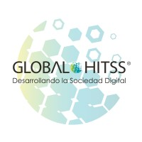

Experiências Profissionais
Desenvolvedor Jr.
AGV Health & Nutrition/ Solistica
fev de 2020 - abr de 2021 · 1 ano 3 meses
Atuando com desenvolvimento, refatoração e manutenção de APIs e Sistemas com arquitetura de microsserviços. Stack: Laravel, Lumen e VueJs.

Analista de suporte II
Global Hitss
jun de 2015 - ago de 2019 · 4 anos 3 meses
Administração de chamados e atendimento ao cliente com suporte técnico de nível I e II em software e hardware. Identificação de problemas através do código fonte (Delphi e C#). Consultas e alterações no Banco de Dados (SQLServer) viabilizando a solução dos problemas em nível I e II.
Analista de sistema
GeoMob - Soluções e Conteúdo Digital Ltda
fev de 2013 - mai de 2015 · 2 anos 4 meses
Responsável pelo desenvolvimento de todo o conteúdo multimídia e informativo das aplicações, além de atuar auxiliando no gerenciamento dos projetos, documentação e melhorias do código (html, css, JavaScript e SQL).